DRIP DYNASTY
 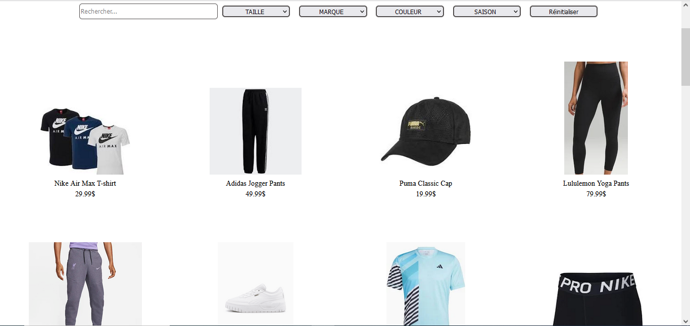
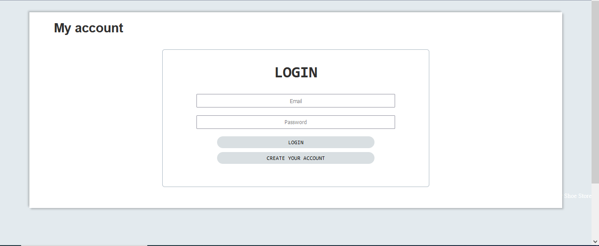
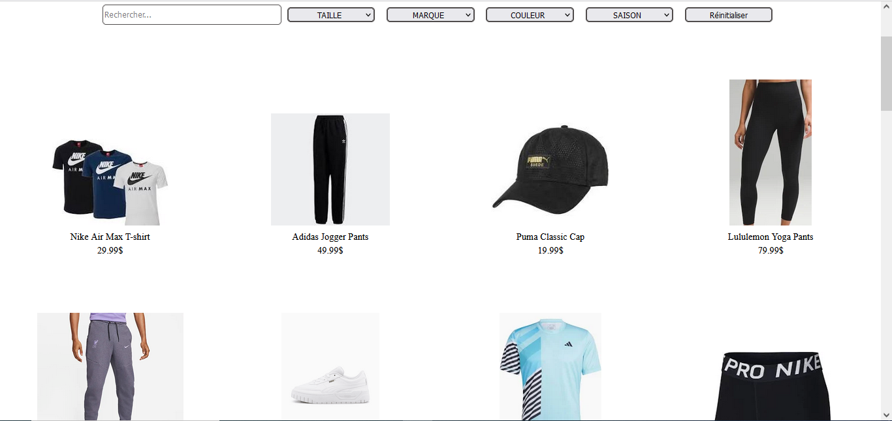
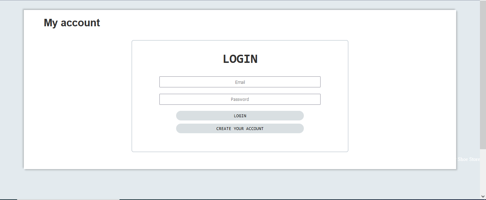
Description du Projet
Drip Dynasty est une boutique en ligne qui propose une variété de
marques de vêtements et de chaussures axées sur le sport. Le site
est divisé en deux parties distinctes : client et administrateur.
Partie Client :
- Page de Connexion : Les utilisateurs peuvent accéder à la page de connexion pour se connecter à leur compte existant.
- Créer un Compte : Les utilisateurs ont également la possibilité de créer un nouveau compte en accédant à la page "Créer un Compte".
- Mon Compte : Une fois connecté, les clients peuvent accéder à la page "Mon Compte". Sur cette page, ils ont la possibilité de supprimer leur compte si nécessaire.
- Catalogue : Les clients peuvent explorer la page du catalogue, qui répertorie tous les produits disponibles. Ils ont la possibilité de filtrer les produits selon leurs préférences.
- Détails du Produit : En cliquant sur un produit spécifique, les clients accèdent à une page détaillée du produit. Ils peuvent ajouter le produit à leur panier depuis cette page.
Partie Admin :
- Page de Connexion : Les administrateurs ont une page de connexion dédiée pour accéder à leur compte administrateur.
- Catalogue : Les administrateurs peuvent accéder à la page du catalogue pour ajouter, modifier ou supprimer des produits. Cela leur donne un contrôle total sur la gestion du catalogue de produits.
- Historique des Commandes : Les administrateurs ont également accès à une page d'historique des commandes, où ils peuvent consulter l'historique des commandes passées sur la plateforme.
Outils Utilisé
HTML
CSS
Java EE
JavaScript
React
Node
GIT
GitHub
SQL
MOVIES HEAVEN
 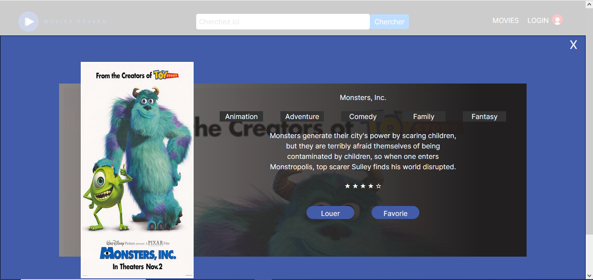
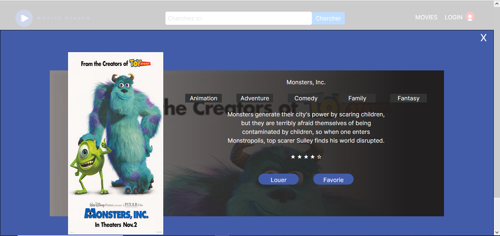

Description du Projet
Movies Heaven est un site web de location de films et de séries.
Un client peut se connecter ou créer un compte. Il peut accéder au
catalogue des films et les filtrer. Lorsqu'on clique sur un film,
on accède aux détails du film où nous pouvons louer le film.
Outils Utilisé
HTML
CSS
Java EE
JavaScript
React
Node
GIT
GitHub
SQL
SAA
 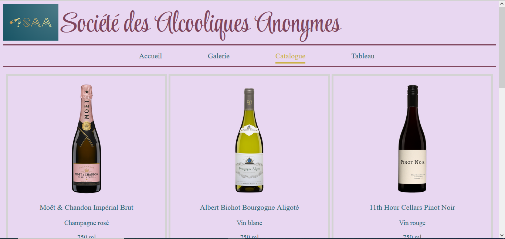
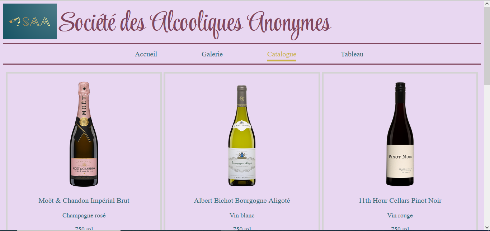

Description du Projet
La Société des Alcooliques Anonymes (SAA) est un site web qui
propose une page d'accueil, une galerie présentant différents
types d'alcools avec des détails accessibles lorsqu'on clique sur
chacun d'eux, une page catalogue regroupant l'ensemble des alcools
avec quelques informations, une page tableau permettant de
comparer les différentes options d'alcools, ainsi qu'une page de
contact. SAA est un site statique qui utilise les bases du HTML et
du CSS.
Outils Utilisé
HTML
CSS
GIT
GitHub
MA VOITURE
 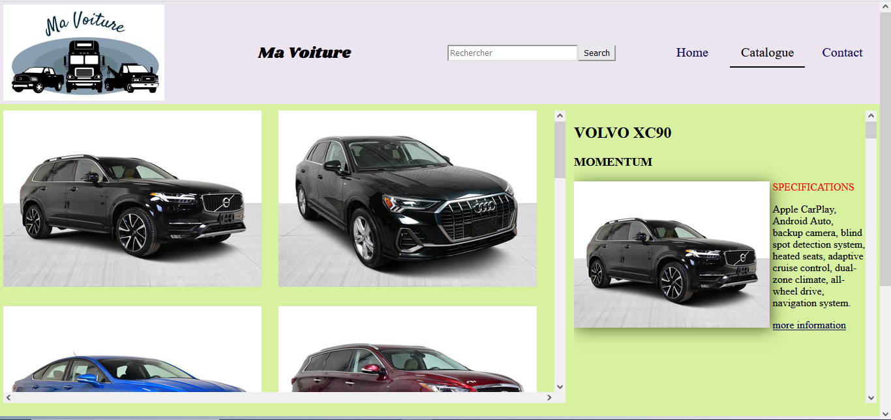
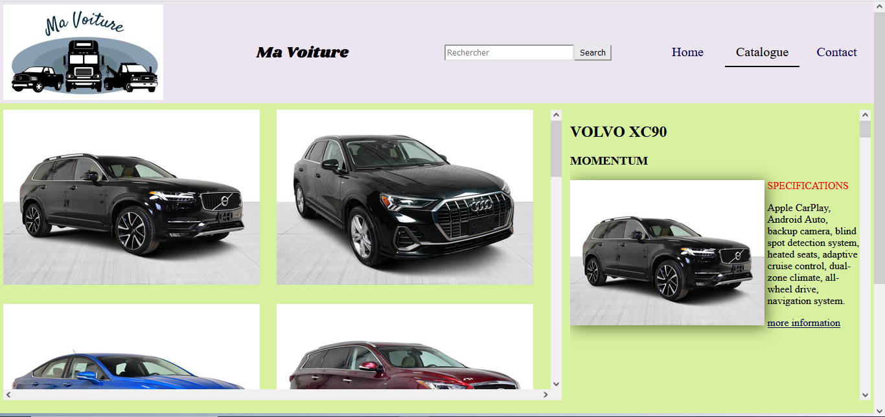
Description du Projet
Ma Voiture est un site web de vente de voitures d'occasion. Il
comprend une page d'accueil qui présente un catalogue de
différentes voitures. Chaque voiture du catalogue est accompagnée
de détails accessibles lorsqu'on clique sur sa fiche individuelle.
En plus de la page Home, le site dispose également d'une page de
contact. Ma Voiture est un site statique et responsive, développé
en utilisant HTML et CSS.
Outils Utilisé
HTML
CSS
GIT
GitHub
MEME CREATOR

Description du Projet
Meme Creator est une petite page web permettant d'éditer des
memes. Vous pouvez modifier l'image ainsi que les textes situés en
haut, au milieu et en bas. Les options de personnalisation
incluent la modification de la couleur, de la taille et de la
police du texte.
Outils Utilisé
HTML
CSS
JavaScript
GIT
GitHub
SPACE INVADER

 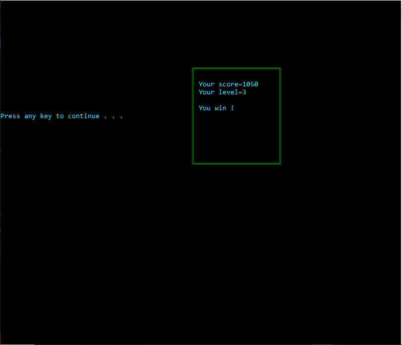
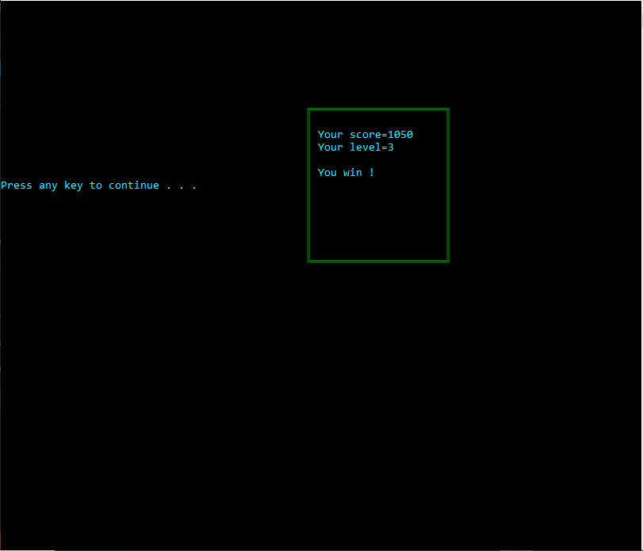

Description du Projet
Space Invader est un petit jeu vidéo en 2D. Vous incarnez un
vaisseau spatial capable de tirer des missiles pour se défendre
contre des ennemis qui vous attaquent. Le jeu comporte trois
niveaux, et à chaque niveau, les ennemis augmentent le nombre de
missiles qu'ils lancent. Si vous parvenez à éliminer tous les
ennemis, vous remportez la partie. En revanche, si votre vaisseau
est touché, vous perdez la partie.
Outils Utilisé
C++
GIT
GitHub
EQUIPE DE FOOT

Description du Projet
Équipe de Foot est une application permettant de gérer une équipe
de football.
Vous pouvez :
- Ajouter un joueur
- Modifier les informations d'un joueur
- Retirer un joueur de l'équipe
- Afficher les informations d'un joueur selon son numéro
- Ajouter ou supprimer un but d'un joueur en fonction de son numéro
- Afficher la liste complète des joueurs
- Afficher le nombre total de buts marqués par l'équipe
Outils Utilisé
C++
GIT
GitHub